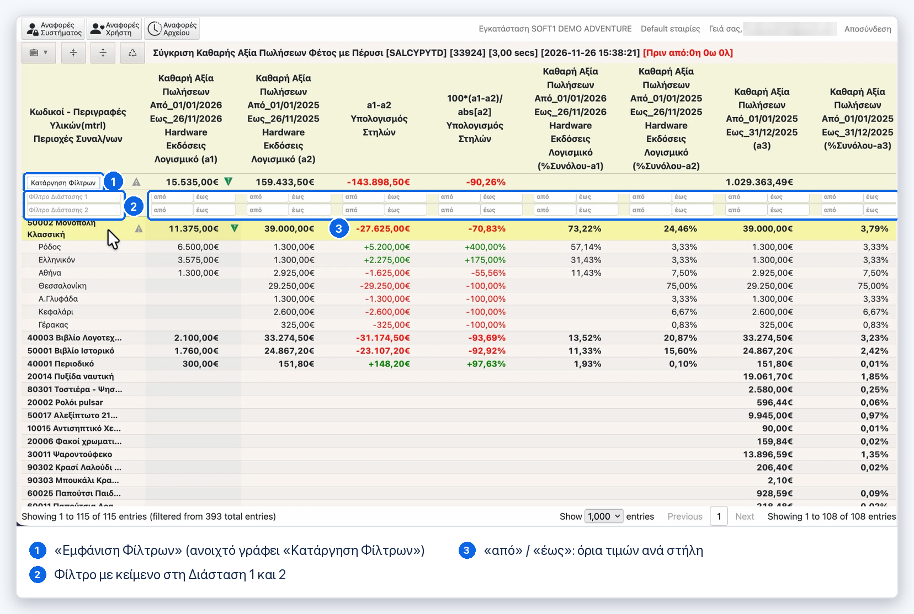
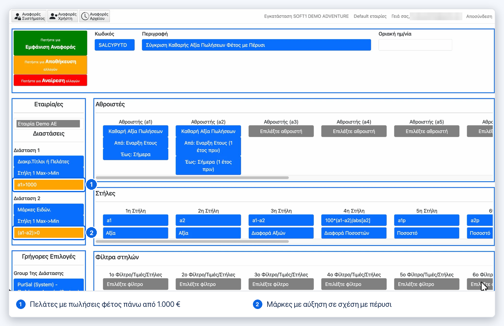

Αριθμητικά φίλτρα και ταξινόμηση
Κρατήστε μόνο τις γραμμές που σας ενδιαφέρουν (π.χ. τζίρος πάνω από 1.000) και ταξινομήστε με ένα κλικ, είτε στα αποτελέσματα είτε μόνιμα από τις ρυθμίσεις.
Τι κάνει#
Υπάρχουν δύο επίπεδα:
| Πού | Τι κάνετε | Πόσο κρατά |
|---|---|---|
| Στα αποτελέσματα | Εμφάνιση Φίλτρων: πεδία από / έως κάτω από κάθε στήλη και φίλτρο κειμένου στη διάσταση. Κλικ στην επικεφαλίδα για ταξινόμηση | Μόνο για όσο βλέπετε την οθόνη |
| Στις ρυθμίσεις | Επιλέξτε ταξινόμηση και συνθήκη γραμμών Επιλέξτε πράξη (πχ a1>a2 and a3>10) | Κάθε φορά που τρέχει η αναφορά |
Προσοχή, είναι διαφορετικά πράγματα:
- Εμφάνιση Φίλτρων (στα αποτελέσματα): φίλτρα πάνω στην αναφορά που ήδη ήρθε. Αλλάζουν μόνο ό,τι βλέπετε στην οθόνη και δεν αποθηκεύονται.
- Φίλτρα και συνθήκες των ρυθμίσεων: αποθηκεύονται μόνιμα μαζί με την αναφορά και ισχύουν κάθε φορά που τρέχει.
Πότε το χρησιμοποιώ#
- Μόνο πελάτες με υπόλοιπο πάνω από 100 €: πατήστε Εμφάνιση Φίλτρων και γράψτε
100στο από της στήλης του υπολοίπου. - Μόνο είδη που πούλησαν λιγότερο από πέρυσι, κάθε φορά: συνθήκη γραμμών
a1<a2. - Οι 20 μεγαλύτεροι πελάτες: ταξινόμηση Στήλη 1 Max->Min και πλήθος γραμμών 20.
Βήματα#
Στα αποτελέσματα#
- Πατήστε Εμφάνιση Φίλτρων, στη γραμμή των συνόλων. Ανοίγουν πεδία κάτω από αυτήν.
- Στο Φίλτρο Διάστασης 1 γράψτε κείμενο για να βρείτε γραμμές με βάση το όνομα. Αν η αναφορά έχει 2η διάσταση, το Φίλτρο Διάστασης 2 φιλτράρει τις γραμμές της.
-
Κάτω από κάθε στήλη γράψτε στο από την ελάχιστη και στο έως τη μέγιστη τιμή. Ο πίνακας φιλτράρεται αμέσως.

Αποτελέσματα με ανοιχτά τα φίλτρα (Εμφάνιση Φίλτρων) -
Πατήστε την επικεφαλίδα μιας στήλης για ταξινόμηση. Ξαναπατήστε για αντίστροφη σειρά.
- Για να βγάλετε τα φίλτρα, πατήστε Κατάργηση Φίλτρων.
Μόνιμα, στις ρυθμίσεις#
- Κάτω από τη Διάσταση 1, στο Επιλέξτε ταξινόμηση, διαλέξτε π.χ. Στήλη 2 Max->Min.
- Στο πεδίο Επιλέξτε πράξη (πχ a1>a2 and a3>10) γράψτε τη συνθήκη. Χρησιμοποιήστε τους αθροιστές a1 … a0, τα σύμβολα
>,<,=και τις λέξειςand,or. -
Κάντε το ίδιο στη Διάσταση 2, αν υπάρχει. Π.χ.
a1>1000στη Διάσταση 1 (πελάτες με φετινές πωλήσεις πάνω από 1.000 €) και(a1-a2)>0στη Διάσταση 2 (μόνο οι μάρκες με αύξηση σε σχέση με πέρυσι), ότανa1είναι οι φετινές καιa2οι περσινές πωλήσεις της ίδιας περιόδου.
Πεδίο «Επιλέξτε πράξη» με συνθήκες στη Διάσταση 1 και στη Διάσταση 2 -
Πατήστε Εμφάνιση Αναφοράς (και Αποθήκευση αλλαγών σε αναφορά χρήστη).
Συμβουλές και συχνά λάθη#
- Τα από / έως της οθόνης δεν αποθηκεύονται. Αν θέλετε τον περιορισμό κάθε φορά, βάλτε τον ως συνθήκη στις ρυθμίσεις.
- Τα σύνολα μετά από φίλτρο οθόνης: Η γραμμή «Σύνολα» ακολουθεί τα φίλτρα της οθόνης: δείχνει το σύνολο των φιλτραρισμένων γραμμών.
- Χωρίς συνθήκη, κρύβονται αυτόματα οι γραμμές όπου όλοι οι αθροιστές είναι μηδέν.
- Η συνθήκη αφορά αθροιστές (a1, a2 …), όχι αριθμούς στηλών.
- Ελληνικά γράμματα στη συνθήκη μετατρέπονται αυτόματα.
- Η ταξινόμηση και η συνθήκη γράφονται στον υπότιτλο της αναφοράς (π.χ. «Ταξ.Δ1: …», «Φιλ.Δ1: …»), για να ξέρει όποιος τη διαβάζει πώς βγήκε.